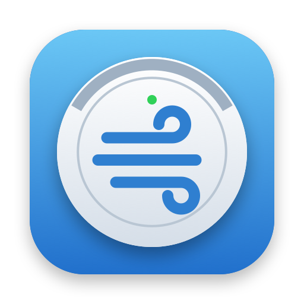
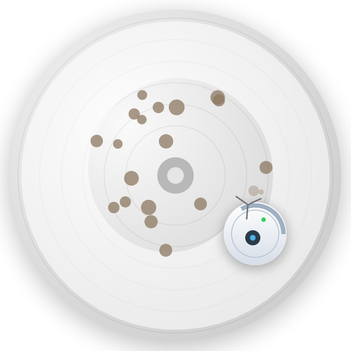

Free up space on your Mac safely, in a few clicks.
Mac'inizde birkaç tıklamayla, güvenle yer açın.
Download for MacMac için indir
A 256 GB MacBook fills up fast. DiskBreeze finds what you no longer need and explains every item in plain words, so you never have to guess what is safe to remove.
256 GB'lık bir MacBook çabuk dolar. DiskBreeze artık ihtiyacınız olmayan dosyaları bulur ve her birini sade bir dille açıklar; neyin güvenle silinebileceğini tahmin etmek zorunda kalmazsınız.
Scan, look at what was found, clean up. Safe items are selected for you; everything else waits for your decision.
Tarayın, bulunanlara bakın, temizleyin. Güvenli öğeler sizin için seçilir; geri kalanı sizin kararınızı bekler.
Everything goes to the Trash first. Your photos, documents and system files are never selected automatically.
Her şey önce Çöp Sepeti'ne gider. Fotoğraflarınız, belgeleriniz ve sistem dosyaları asla otomatik seçilmez.
Drag an app into the window: DiskBreeze also finds the settings, caches and data it left behind.
Bir uygulamayı pencereye sürükleyin: DiskBreeze geride bıraktığı ayarları, önbellekleri ve verileri de bulur.
Finds data from apps you already deleted — carefully, leaving out anything a related app might still use.
Daha önce sildiğiniz uygulamalardan kalan verileri bulur; ilgili bir uygulamanın kullanıyor olabileceği her şeyi dışarıda bırakarak.
Free space in the menu bar, and a reminder when cleaned-up files are still waiting in the Trash.
Menü çubuğunda boş alan ve temizlenen dosyalar hâlâ Çöp Sepeti'nde beklerken bir hatırlatma.
No account, no tracking, no internet connection at all. Your files never leave your Mac.
Hesap yok, izleme yok, hiçbir internet bağlantısı yok. Dosyalarınız asla Mac'inizden çıkmaz.
DiskBreeze is signed with Developer ID and notarized by Apple, so macOS opens it without warnings. SHA-256 of the disk image: 0eaa9e644a80d1cf2d8dec99ee4c6b5433e21000f2bc7739648e087a9f43ba83
DiskBreeze, Developer ID ile imzalanmış ve Apple tarafından onaylanmıştır (notarized); macOS uyarı göstermeden açar. Disk görüntüsünün SHA-256 değeri: 0eaa9e644a80d1cf2d8dec99ee4c6b5433e21000f2bc7739648e087a9f43ba83
English, Türkçe, Deutsch, Français, Italiano, Español, Русский, 简体中文, 日本語 and 한국어. DiskBreeze uses your Mac's language automatically.
English, Türkçe, Deutsch, Français, Italiano, Español, Русский, 简体中文, 日本語 ve 한국어. DiskBreeze, Mac'inizin dilini kendiliğinden kullanır.